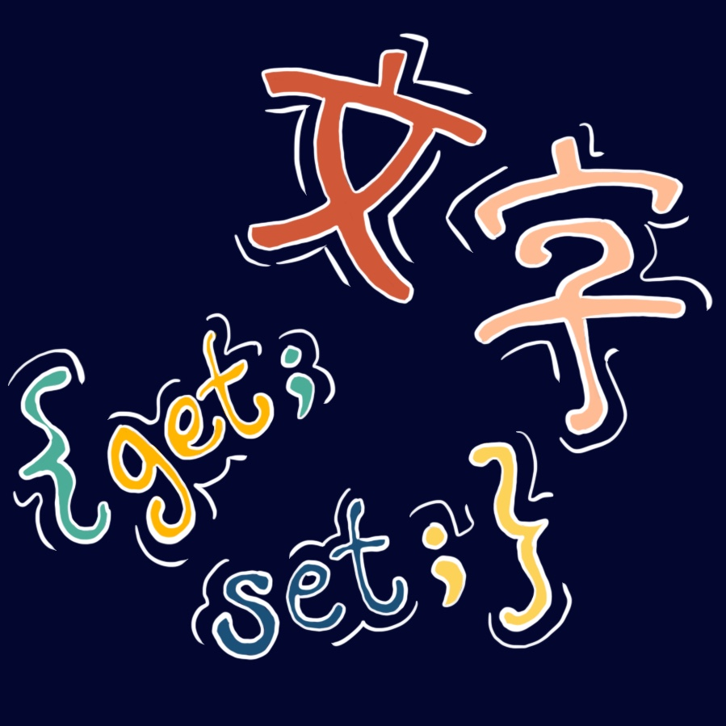

Hi, I'm Steph.
About me
I'm an IT nerd who has fun with what I do! So far, "what I do" has involved: project management/business analysis, SQL databases, a smidge of web dev/hosting, heaps of "content management" (ECM and CMS), and a dash of .NET (C#, ASP, WPF).

Personal projects
I use GitHub to tinker with software/web development, and to share the resources that I build for Japanese learners like me.
My favorite GitHub projects:
The blog
I've been offloading thoughts onto some iteration of a WordPress site for over 10 years. Favorite topics include: technology, art, philosophy, ethics, and learning.
Professional work
For a copy of my resume, send me an email or message me on LinkedIn.